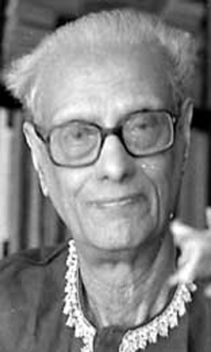
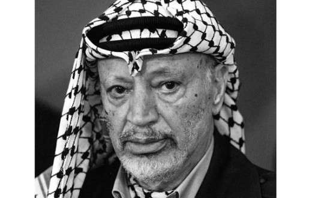

Recognising Sheikh Mujibur Rahman
As long as Padma, Meghna, Gouri, Jamuna flows on, Sheikh Mujibur Rahman, your accomplishment will also live on
Annada Shankar Ray
Poet and Essayist
I have not seen the Himalayas. But I have seen Sheikh Mujib. In personality and in courage, this man is the Himalayas

Fidel Castro
Former Prime Minister of Cuba
Sheikh Mujibur Rahman does not belong to Bangladesh alone. He is the harbinger of freedom for all Bengalis

Mohamed Hassanein Heikal
Egyptian journalist
On the death of Sheikh Mujib, the world of the oppressed has lost an incredible leader. And, I have lost a true friend with a benevolent heart

Fidel Castro
Former Prime Minister of Cuba
The speciality of Mujib’s character was his uncompromising fighting leadership with a generous heart
Yasser Arafat
Former Chairman of the Palestine Liberation Organization
I’m broken by the news of Sheikh Mujib’s death. He was a great leader. His extraordinary heroism has been a source of inspiration for the people of Asia and Africa

Indira Gandhi
Former Prime Minister of India
A man with Awami League’s leader Sheikh Mujibur Rahman’s spirit and dynamic leadership will not be found in Asia within the next twenty years
Henry Kissinger
Former United States Secretary of State
Sheikh Mujibur Rahman has inspired the Vietnamese people

Kenneth Kaunda
Zambian Politician
Bangabandhu is the bravest leader of all time
 যতকাল রবে পদ্মা যমুনা গৌরি মেঘনা বহমান
ততদিন রবে কীর্তি তোমার শেখ মুজিবুর রহমান
যতকাল রবে পদ্মা যমুনা গৌরি মেঘনা বহমান
ততদিন রবে কীর্তি তোমার শেখ মুজিবুর রহমান